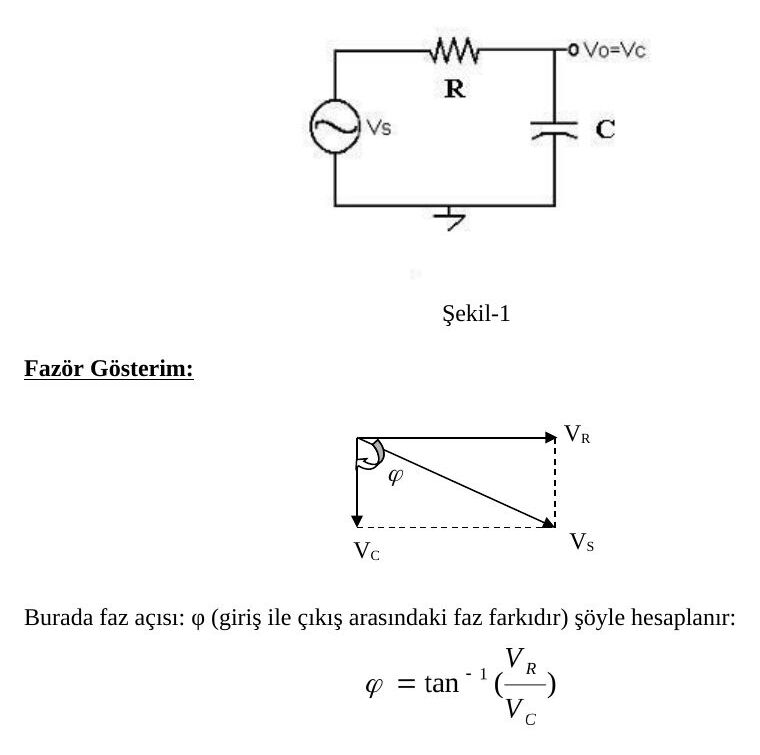
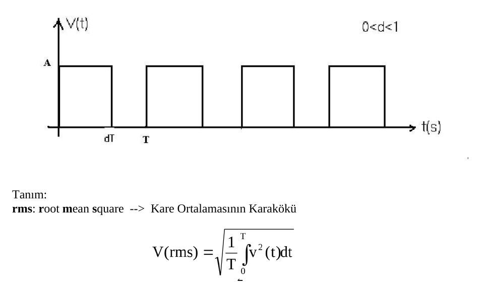
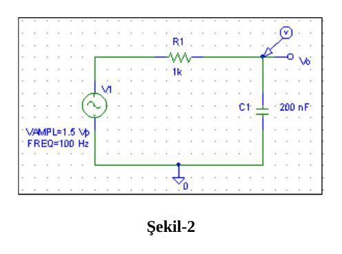
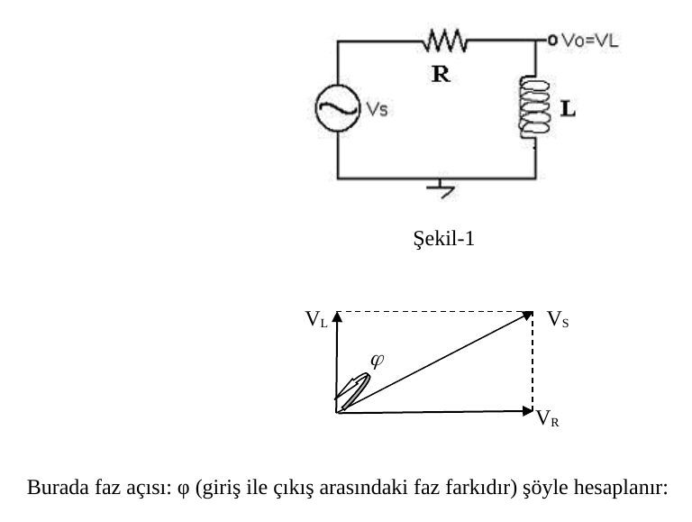
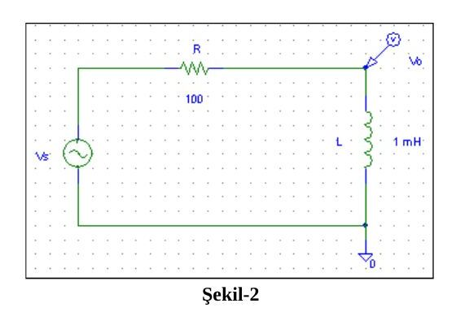

· EEM202
EEM202 Devre Teorisi II: Deney 1–2, Sinüsoidal RC ve RL Devrelerinin İncelenmesi
EEM202 – Devre Teorisi II · 08.03.2013 · 16.10.2026
Bu yazı, Başkent Üniversitesi Elektrik-Elektronik Mühendisliği EEM-202 Devre Teorisi-2 Laboratuvarı'nın ilk iki deney föyünü içeriyor: Deney-1: Sinüsoidal RC Devrelerinin İncelenmesi ve Deney-2: Sinüsoidal RL Devrelerinin İncelenmesi (föylerin 2013 baskısı). Föy metinleri aktarıldı, devre şemaları ve şekiller görsel olarak eklendi; ölçüm tabloları boş hâlleriyle verildi. İki föyün orijinal Word dosyaları yazının sonunda ZIP olarak indirilebilir.
Deney-1: Sinüsoidal RC devrelerinin incelenmesi
Amaç: Temel AC kavramların ve sinüsoidal devrelerle çalışmanın öğrenilmesi, kapasitör empedansının frekansla değişiminin gözlenmesidir.
Kuramsal bilgi
Kapasitör, empedansı frekansla değişen bir devre elemanıdır. Kapasitörler sinüsoidal devrelerde giriş ve çıkış uçları arasında 90°'lik faz farkı oluşturur. Bundan dolayı devre analizinde fazör gösterim kullanılır. Şekil-1'de RC devresi için fazör gösterim verilmiştir.

Burada faz açısı φ (giriş ile çıkış arasındaki faz farkı) şöyle hesaplanır:
φ = tan⁻¹(V_R / V_C)
Burada φ'nin işareti negatiftir, neden? (Giriş mi, yoksa çıkış mı daha önde?)
Faz açısı osiloskop ile nasıl ölçülür?
- Giriş ve çıkış arasındaki zaman farkı (Δt) ölçülür.
- Şu orantı kurulur: T (periyot) → 360 derece; Δt → ? derece
Ön çalışma
- Şu kavramları tanımlayın: periyot, empedans, rms değer.
- Kapasitör için empedansın frekansla nasıl değiştiğini açıklayın. Frekans sıfır olursa (DC) ve çok büyük frekanslarda (UHF: Ultra High Frequency) kapasitörün nasıl davranacağını açıklayın.
- Aşağıdaki işaretin rms değerini (a) A, d ve T cinsinden, (b) d = 0.6 ve A = 5 için hesaplayınız.
Tanım: rms (root mean square), kare ortalamasının kareköküdür: V(rms) = √[(1/T)∫₀ᵀ v²(t) dt]

Deney: RC devresi
Şekil-2'deki devreyi C = 200 nF ile kurun.
- V_s = 3 V_p (p: peak / tepe değeri) ve f = 100 Hz için çıkış sinyalini (V_o = V_C) ölçün.
- Devrenin fazör gösterimini çizin. Faz açısı φ'yi fazör gösterimden hesaplayın.
- Tablo-1 ile verilen diğer frekanslar için çıkışı V_C (p) ve giriş-çıkış arasındaki faz farkını Φ osiloskop ile, I_C akımını AC ampermetre ile ölçün ve tabloya kaydedin.

Not: Föyün metninde V_s = 3 V_p yazıyor; Şekil-2'deki PSpice kaynağı ise VAMPL = 1.5 V (yani 3 V tepeden tepeye) olarak çizilmiş. Föy hâliyle bırakıldı.
Tablo-1
| f (Hz) | V_C (p) | I (rms) | Φ (derece) |
|---|---|---|---|
| 100 | |||
| 200 | |||
| 400 | |||
| 800 | |||
| 1600 |
Sonuçlar ve yorum
- RC devresinde akım frekansla nasıl değişmektedir? Giriş-çıkış arasındaki faz açısı frekansla nasıl değişmektedir? Grafik çizerek yorumlayınız.
- Tablo-2'deki değerleri hesaplayarak doldurunuz.
Tablo-2
| f (Hz) | X_C (Ω) | V_R (p) |
|---|---|---|
| 100 | ||
| 200 | ||
| 400 | ||
| 800 | ||
| 1600 |
Deney-2: Sinüsoidal RL devrelerinin incelenmesi
Amaç: RL devresi üzerinde çalışarak bobin empedansının frekansla değişiminin gözlenmesidir.
Kuramsal bilgi
Bobin, empedansı frekansla değişen bir devre elemanıdır. Bobinler sinüsoidal devrelerde giriş ve çıkış uçları arasında 90°'lik faz farkı oluşturur. Bundan dolayı devre analizinde fazör gösterim kullanılır. Şekil-1'de RL devresi için fazör gösterim verilmiştir.

Burada faz açısı φ (giriş ile çıkış arasındaki faz farkı) şöyle hesaplanır:
φ = tan⁻¹(V_R / V_L)
Burada φ'nin işareti nedir?
Ön çalışma
- Bobin için empedansın frekansla nasıl değiştiğini açıklayın. Frekans sıfır olursa (DC) ve çok büyük frekanslarda (UHF: Ultra High Frequency) bobinin nasıl davranacağını belirtin.
- Şu kavramları tanımlayın: frekans, reaktans, admitans.
Deney: RL devresi
Şekil-2'deki devreyi L = 1 mH bobin ile kurun.
- V_s = 3 V_pp ve f = 40 kHz için çıkış sinyalini (V_o = V_L) ölçün.
- Devrenin fazör gösterimini çizin. Faz açısı φ'yi fazör gösterimden hesaplayın.
- Tablo-1 ile verilen diğer frekanslar için çıkışı V_L (p) ve giriş-çıkış arasındaki faz farkını Φ osiloskop ile, akımı AC ampermetre ile ölçün ve tabloya kaydedin.

Tablo-1 (ölçülen) ve Tablo-2 (hesaplanan) aynı sütunlara sahiptir:
| f (kHz) | V_L (p) | I (rms) | Φ (derece) |
|---|---|---|---|
| 20 | |||
| 40 | |||
| 60 | |||
| 100 | |||
| 140 |
Sonuçlar ve yorum
- RL devresinde akım ve faz açısı frekansa bağlı olarak nasıl değişmektedir? Grafik çizip yorum yapınız.
- Tablo-2'deki değerleri hesaplayarak ilgili boşlukları doldurunuz. Tablo-1'de ölçtüğünüz değerlerle karşılaştırıp yorumlayınız.